Rendered Mermaid diagrams
Documentation diagrams, not game screens. Click a diagram for its full SVG, then zoom in your browser.
Proposed course graph
Current career proposal — details unapproved
Source document · Open SVG to zoom · PNG


Education: the two original starting branches
Original-game reference
Source document · Open SVG to zoom · PNG


Whole-game journey
Original-game reference
Source document · Open SVG to zoom · PNG


Flow and ownership of the central area
Original-game reference
Source document · Open SVG to zoom · PNG


Original flow between screens
Original-game reference
Source document · Open SVG to zoom · PNG


Screen flow
Earlier planning draft — see modern-direction review for amendments
Source document · Open SVG to zoom · PNG


Proposed overall journey
Earlier planning draft — see modern-direction review for amendments
Source document · Open SVG to zoom · PNG

